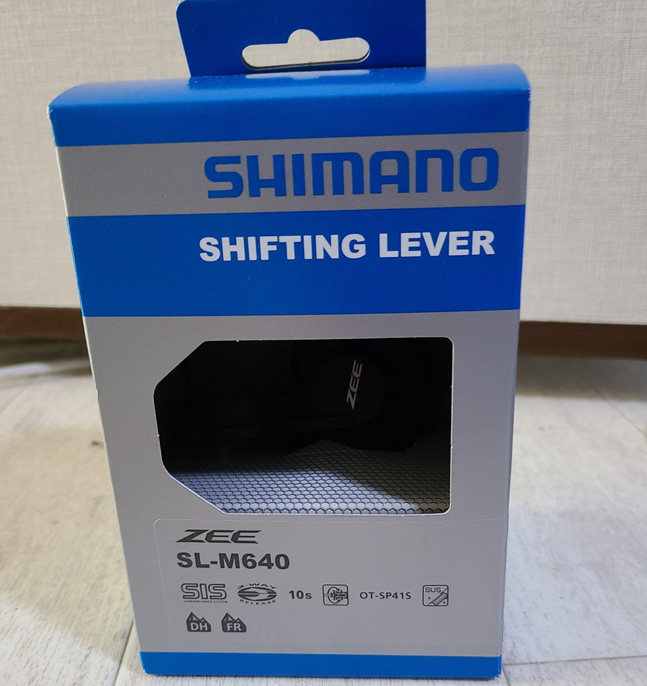

投稿日2022-11-15
街乗りはアルタス
アルタス、今の自転車についているディレーラー。たいていエントリークロスにはこいつが標準搭載されている気がする。もうちょい安いとターニーか。Giant Escape R3もリニューアルされてからはSram X3ではなくてアルタスがついていた。自分は中古で昔のチューブがスリムなR3を買ったのでなんとなく昔アルタスに対して憧れを持っていた。
いやべつにX3もいい子なんだけどね！というか多分大差ないし日本価格はX3の方が高いはず。多分。
そんなアルタスも気づけばリニューアルされRD-M2000,9速になりMTBらしい見た目になっていた。そうMTBコンポなんすよねこいつ。忘れがちだけど。
まあでもやっぱり街で見かけるのはRD-M310の方だ。7,8速用と言われているこいつの方なのである。
10速化したい
EscapeをTiagra化したときの反省を踏まえてこのままアルタス乗り回してやるぜと決心していたがちょっと魔が差して10速化したくなった。いくならまたtiagraか？SL-4600はもう譲ってしまったしなぁ。じゃあMTBコンポでDeoreのRD-M5120あたりにしてみる……。
RD-M310「俺ならいける」そうアルタスが言いたそうなオーラを醸し出していた。たしかにこいつは他のディレーラーにはなかなかないビッグプーリーだ。引退させるにはまだ早いのではないか。調べると9速にしている人はいる。n+1理論で考えれば10速も可能なのではないか。それに街乗りでtiagraとかDeoreとか少しづつ盗難が怖くなってくるラインだ。
そうだアルタスのまま10速化しようこうして実験は始まったのであった。
データ集め
とりあえず先行研究を集めることにしようそうしよう。これだけ普及してるディレーラーだ。おそらく同じ発想に至る人はいるはず。と思ったが直接は(後述)見かけなかった。
まずはこのブログ、普通に9sはできている。では10ｓはどうなのか？と調べてみたが全くヒットしなかった。
そこで引き量を調べることにした。このサイトはShimanoのロードコンポの話をしているので注意が必要だが8sで10sを引くことはできそうだ。
そんな中7sクラリスで10s化を果たしている動画があった。
その後色々調べたがシマノMTB9sまでとロード10sまではシフターとディレーラーの引き量の関係が同じでスラント角さえどうにかなれば引けるっぽい。ただMTB10sからはダイナシスという規格になっていてシフターの引き量が増えているため互換性がない。
そのためこういったことが可能になっていた。ということはSL-4600とRD-M310に10sスプロケットを組み合わせればうまくいくはずだ。
あとターニーで11s引いてたり、tiagra4700で11s引いてる動画もあったのでもうこれ以上は考えるのをやめた。意味がわからない。まあロード１１速はスプロケットの幅が増えてるから可能なのかSTIが柔軟なのか……
ちなみにアルタスで10sを引いてると思われるサイトはこちら。明言はしてないがスプロケットが10sなのに加え別の記事でSTIのメンテナンスを紹介している際にしれっとRD-M310が出ていた。あとは別の人物がメイン車のスポーク折れで急遽10速化したとつぶやいていた。双方とも明確に手段を示しているわけではなかったので99パーやってるなくらいの推察。
兎にも角にもShimanoのロード用10sシフターにRD-M310の組み合わならできるはず。
でもやらない
だが、私は道を踏み外した。

Zee RD-M640……。そうMTB10s用のシフターを買ってしまったのである。見事な逆張り。実は下調べする直前に買ってしまったので後戻りできなくなったのでもうこれでいくことにした。あとアルタスはMTBなのでやっぱりMTBのシフターで引きたいよね！
ちなみに似たようなことをして失敗している動画があった。やっぱダイナシスって引き量違うんだな……。でも今更やめられないという結論に至ったのとSL-4600をまた書い直すのも癪だったのでどうにかしたいと悩んでいた。
フリクション化でお茶を濁す作戦
実はシマノのターニーのレバーを改造すれば安く10sフリクションレバーを作ることができる。とりあえずはそれで様子見しておこうと思った。
そして完成品がこちらになります。これならレバーが700円、スプロケは3000円程度という激安で10s化ができる。
フリクションレバーの作成方法はこのサイトを参考にさせていただいた。とりあえず次回補足を兼ねて自分の削った部分を見せたいと思う。
ということで続く。ではまた～。